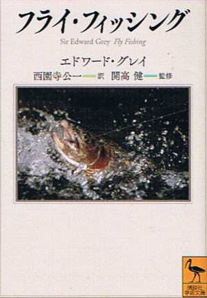

本棚から
フライ・フィッシング エドワード・グレイ 著 西園寺公一 著
もう何年も前に、近所の書店の文庫本売り場で見つけたのがこの本。2013年に講談社学術文庫から発行されている。日本語版の原本は、1985年にTBSブリタニカから出ていたようである。英語の原本は、1899年に刊行されたとある。
著者は、イギリスの政治家・鳥類学者であり、フライフィッシングのエキスパートとしても著名なエドワード・グレイ卿、訳者は、こちらも貴族で政治家の西園寺 公一（さいおんじ きんかず）氏>、そして監修は開高健となれば読まねばなるまいということで、速攻で手に取りレジに向かった。買って以来数年書棚で眠っていたのだが、最近取り出して読んだ次第。

本の帯にある開高さんの推薦文には、
「読者は川岸での純潔な悦びと静思の愉しみを伝えられ、感染し、ほのぼのと心のほぐれをほどかれる･･･真に重要なのは人と作品にある感情の魅力であり、気品である･･･まったくそのとおりである。その言葉をそのまま卿の著作についても贈呈したい。」
とある。
目次をアマゾンのページより引用すると、以下のようになっている。
- 心の根拠地――グレイ卿の人と作品 開高健
- 第一章 はじめに
- 第二章 ドライ・フライ・フィッシング
- 第三章 ドライ・フライ・フィッシング(続)
- 第四章 ウィンチェスター学校
- 第五章 ウェット・フライの鱒釣り
- 第六章 シー・トラウト釣り
- 第七章 鮭釣り
- 第八章 釣り具について
- 第九章 鱒の養魚に関する私の実験
- 第十章 若き日々の思い出
- エドワード・グレイとの奇縁――訳者あとがきに代えて
- 原本付記
- 地図
この本の中でまず最初に感銘を受けたところは、第一章 はじめに の中で書かれている、
「釣りの腕前ということなら誰にゆずってもよいが、釣り人としての名声が上手下手でなく、釣りへの愛着、釣りの喜びによって計られるとしたら、私は釣り人たちの間で高い位置を占めたいと思う。この本のおもな目的も、この喜びについて語り、その喜びの特質や価値を説明することにある。」
というグレイ卿の姿勢である。釣りの技術を説明した本は数多あるけれども、純粋に釣りの喜びと愉しみを伝えるために書かれた本は少ないのではないか？また、こんな一節もある。
「しかし、いちばん大きい魚をばらしたからと言って、一日のこれからの楽しみや成果を台なしにしてしまうほど気落ちするのはもったいないことだ。釣りにおいては、興奮をともなう他のすべてのリクリエイションと同じで、われわれは不運な出来事にたいしてすぐに自制し、気を持ち直すようにつねに心がけるべきである。」
第二章 ドライフライ・フィッシング においては、ベストシーズンである六月の週末の早朝にロンドンから列車に乗り、世界的に有名な鱒釣りの名川、チョークストリームのテスト川とイッチェン川に向かう際の心躍る光景が描写されている。イギリスの地理には疎いのだが、巻末の地図を見ながら本文を読んでいくと、ロンドンから列車で三時間あまりで両川まで着くことがわかり、意外と近いのだなぁと思った。
ニュージーランドにも、チョークストリームに渓相の良く似たスプリングクリークがたくさん有り、それらを思い出すとドライフライの選択や流し方の記述には、なるほどなぁとうならされるところが多くあって懐かしかった。河畔でハッチを待つ時間の心の躍動もまた、共感できる記述ばかりであった。
第四章では、ウィンチェスターにあるパブリックスクール時代の釣りのことが記されており、学業の忙しさの中で懸命に時間を作ってフライフィッシングを覚えてゆく経過が生き生きと描写されている。イギリスのパブリックスクールはとても厳しい学校生活だというイメージがあるが、休み時間に鱒釣りに出かけられたとは意外だった。グーグルマップで見ると、ウィンチェスターの町とイッチェン川、テスト川とはとても近いことが分かって納得した。
第六章では、シー・トラウト（ブラウントラウトの降海型）の釣りに一章が割かれている。グレイ卿曰く、
「魚の中で、大きさの割りにもっともよくたたかうのは、シー・トラウトである。」
とある。僕はヨーロッパのシー・トラウトは釣ったことが無いけれど、ニュージーランド南島西海岸の川の河口近くで何尾か、Sea Runner を釣った。その時の経験からしても、降海型のブラウントラウトが激しく引いてファイトするというのはとても納得できる。次回のＮＺ釣行では、ぜひ大物のシー・ランを釣り上げてみたいものだと願っている。グレイ卿が釣った水域では、シー・トラウトを釣るためのフライ選択が難しいと書かれているが、ＮＺ南島のウェストコースト辺りなら、時期さえ合えばホワイトベイトを模した白っぽいストリーマー一本で勝負できるので、気が楽である。まぁいつでも例外はあるけれど。
第七章は、多くのフライフィッシャーマンの憧れ、鮭釣りについて書かれている。この章の冒頭には、
「鮭釣りは淡水釣りのなかで最高の釣りである。」
と短く述べられているが、僕もいつかチャンスがあれば鮭をフライで狙ってみたいと思っている。
第八章は、釣り具について がまとめられており、その中に、僕の心臓をドキュンと打つような一文があった。卿曰く、
「したがって、あらゆる種類の毛鉤釣りで、経験ずみの少数の毛鉤に集中し、それに徹することが概して成功につながることを私は確信するにいたった。」
とある。実に身につまされる言葉である。グレイ卿の生きた時代からすれば、現代はさらに、はるかに釣り具が発達・発展しているのだろうが、この一文の輝きは決して薄れることはないであろう。
最後の第十章は、若き日の思い出 として、少年の日のみみず餌釣りのことなどを振り返って書かれている。餌釣りの合わせの難しさや、日によっては鱒がみみずを噛みちぎるだけで鉤になかなか掛からないこと、さらにみみずの種類としては「きじ」が最高であることなどが述べられているが、これも僕の少年時代におけるアマゴの餌釣りの経験からも非常に納得できる。そして、少年の日のグレイ卿は、みみずの餌釣りからウェットフライの釣り、そしてドライフライの釣りへと経験を積んでいったことが生き生きと書かれており、読んでいて実に愉しかった。
晩年は決して幸福とは言えない人生だったそうであるグレイ卿であるが、「フライ・フィッシング」という素晴らしい一冊を釣り人たちにとって遺してくれたことに感謝して読み終えた。さらに、英語に堪能で熱心な毛鉤釣りの愛好家でもあった西園寺氏の名訳によって、日本語で読めることにも感謝したい。
固くて難しい本をたくさん出している講談社学術文庫からこの本が出ていることが不思議でもあるが、手頃な価格でこの名著が現在でも入手できることは、僕たちにとって実に幸せなことだと思う。あなたも、釣りに行けない日の一冊としてぜひどうぞ。最初に出版された大型本もまだ入手可能なようです。
本棚から 目次へ
サイトマップ
ホームへ
お問い合わせ